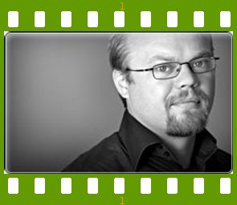
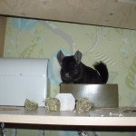
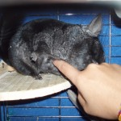

People of openSUSE: Claes Backstrom

This week on ‘People of openSUSE’ we have interviewed openSUSE Election Committee member, Senior Linux Trainer and VMware Trainer Claes Backstrom. Besides all these titles he has he still has time to package games on openSUSE Build Service, beta testing, and promoting openSUSE in his North European cold country, Sweden!
- Nicknames: etrash or claes
- Homepage/Blog: Well I tried a couple of times with both. But I think it’s more fun to set up the systems. And when that is done. I have noticed that I never update it. So I have stopped trying. I’m more of a speaker than a writer.
- Favorite season: Summer
- Motto: There are no stupid questions only stupid answers.
Please introduce yourself!
I was born a warm summer day 33 years ago in a small town in between Stockholm, Gothenburg and Oslo, called Kristinehamn. Now days I live in Stockholm. Working at Swedens largest Computer Education company as a Senior Linux Trainer and a VMware Trainer.
Tell us about the background to your computer use.
I was 10 years old the first time I sat in front of a computer for the first time, and I got this feeling that this is what I want to do the rest of my life. I was totally mesmerised by the things you could do with it. It was a Commodore VIC-20. Remember this was around -85. One thing lead to another and in the late 80s and in the early 90s I was active in the Amiga Demo Scene. That got me into music so I started to play base guitar in a Punk Band. After some years I faced the fact, I would never be a Rock Star and it was time to grow up. So I started my own Computer Consulting firm. Working with computer communications (switches, routers, ip and things like that). But I was not cut out to run my own company. So in -98 I moved to Stockholm and started working as a Teacher. Teaching system and network administration on Microsoft Windows NT 4.
When and why did you start using openSUSE/SUSE Linux?
I got bored at Windows NT, so I was looking around for something new to play with.I had heard some news about GNU/Linux and I had used Unix systems before so I though that GNU/Linux could be fun to play with. So I got out on the net and started to look around. I found a German company that was about to release a new version of their Linux Distribution so I ordered my copy of S.u.S.E Linux 5.3 which was released in July -98 I got my box in August -98. I knew that I would never learn it without using it. So I installed it on my Workstation at work and at home. And since then I have been using GNU/Linux as my main OS. And I have never looked back. And in -99 I started to teach GNU/Linux.
{kind=link}
When did you join the openSUSE community and what made you do that?
When Novell announced that they would acquire SuSE in 2004. I worked as a GNU/Linux trainer at a Novell Trainning Center. So it was natural that we changed our GNU/Linux courses to SUSE. I saw the Novell deal as a new ignition for GNU/Linux at a whole. To me it feels like the best thing that could have happened for GNU/Linux. Novell with its history and large install base. Putting their weight behind GNU/Linux. That made me go back using SUSE and becoming a CNI (Certified Novell Instructure). In the beginning I spent most of my time teaching and fixing small errors in the Novell course material in the CNI community. And then when openSUSE project was announced I jumped on that train.
In what way do you participate in the openSUSE project?
I participate in some different ways. Regular beta testing of factory and beta releases. I maintain some 30-35 packages in the openSUSE BuildService games project. And probably the same number of packages in my home project in the BuildService. I was one of the election officials in the Board election.
I’m also moderator in the Swedish SUSE forum. We are some people that are working on extending the forum to a Local openSUSE Community in Sweden. And if there are anyone out there that would like to help with that please, please contact me. I also spend a lot of time on IRC and you most often see me in #opensuse-gnome #opensuse-factory #opensuse-buildservice #opensuse-xen #opensuse-nordic and #opensuse-project so come on by and say Hello.
I have a bunch of ASUS eeePC so right now I’m working to get openSUSE running without any problem on them. If anyone would like to help with this please contact me.
I do some translation of the wiki to Swedish. I also travel around in Sweden talking about Free/Open Software, openSUSE and GNU/Linux in general. And I hope I will have more time to put into the Gnome Team.
What especially motivates you to participate in the openSUSE project?
All the great people that are part of the project. And that you get a feeling that you can make a change. And of course openSUSE is the best implementation of GNU/Linux.
What do you think was your most important contribution to the openSUSE project/community or what is the contribution that you’re most proud of?
Well, when you can’t write code but you get your first patch accepted upstreams it is a great feeling of pride (even if it was a small bash script fix). :-)I feel I do my best work in the Swedish forum. When people come and say that they started using openSUSE because they like the attitude and feeling we have in the forum. But the most fun is to travel around and talk about openSUSE with people.
When do you usually spend time on the openSUSE project?
All the time when I’m not sleeping or when I have a classroom full of students and I’m not teaching SUSE.
Three words to describe openSUSE? Or make up a proper slogan!
openSUSE – Linux that just works.
What do you think is missing or underrated in the distribution or the project?
I would like to see software that Novell is upstream for in openSUSE, such as kablink and iFolder.
What do you think the future holds for the openSUSE project?
Today openSUSE is the best distribution and I can only see that it will get better building on all the knowledge of a growing community.
A person asks you why he/she should choose openSUSE instead of other distribution/OS. What would be your arguments to convince him/her to pick up openSUSE?
Try them all and you will come back to openSUSE as it’s the best.
Which members of the openSUSE community have you met in person?
None so far. Except all the people I have taught. :-)
How many icons are currently on your desktop?
Oh too many. I use my Desktop as a TODO list. So right now. 41 icons without the standard 4 in Gnome. We have a saying in Sweden: A messy desktop is a sign of a messy head. And an empty desktop is a sign of an …….. :-)
What is the application you can’t live without? And why?
Bash. Sometimes I’m forced to work with Windows machines and I scream out loud every time I try to use a cmd prompt.
Which application or feature should be invented as soon as possible?
Something that can create more time.
Which is your preferred text editor? And why?
Vim. I know how it works.
Which famous person would you want to join the openSUSE community?
I rather have regular users than some famous person joining the community.
Which computer related skills would you like to have?
Probably to long to list here. But the top one is C.
The Internet crashes for a whole week — how would you feel, what would you do?
Nice. Finally I can read that book.
Which is your favorite movie scene?
The ending in George A. Romeros Night of the Living Dead.
Star Trek or Star Wars?
Don’t like any of them. More into Splatter horror movies. But if I have to choose I would choose Star Trek.
What is your favorite food and drink?
I love all kind af food. And a Guinness to relax with is wonderful.
Favorite game or console (in your childhood and nowadays)?
Last Ninja on the Commodore 64 and Never Winter Nights.
Which city would you like to visit?
I would love to go back to Johannesburg in South Africa on vacation instead of work.
What is your preferred way to spend your vacation?
Earlier I loved to travel. Nowadays I spend to many nights in hotel rooms all over. So I prefer to stay at home.
Someone gives you $1.000.000 — what would you do with the money?
Exchange it to Euro or Swedish kronor. And then Invest them in a FLOSS company. Probably I would take some friends out on the pub first.
If traveling through time was possible — when would we be most likely to meet you?
Probably right here right now.
There’s a thunderstorm outside — do you turn off your computer?
Nope.
Have your ever missed an appointment because you forgot about it while sitting at your computer?
Oh yes. Many times.
Show us a picture of something, you have always wanted to share!
Not something I always wanted to share. But it’s some pictures.
 
My man, he is always happy to see me whatever have happened.
You couldn’t live without…
Except the obvious like air, food and water. Good friends
Which question was the hardest to answer?
The next one.
What other question would you like to answer? And what would you answer?
(none)